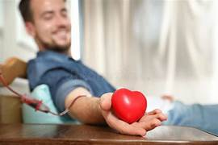

We Make Diffrence

"The hero blood donor, a beacon of hope and selflessness, whose life-giving gift of blood paints a tapestry of compassion and saves countless lives."
Hero Donor

Blood banks play a vital role in preserving and providing life-saving blood products for transfusion.
Blood Bank
Great medical professionals at a blood bank save lives by skillfully collecting, processing, and distributing blood products with unwavering dedication and expertise.
Medical Professionals

A blood bank campaign raises awareness and encourages individuals to donate blood, saving lives and making a positive impact on the community.